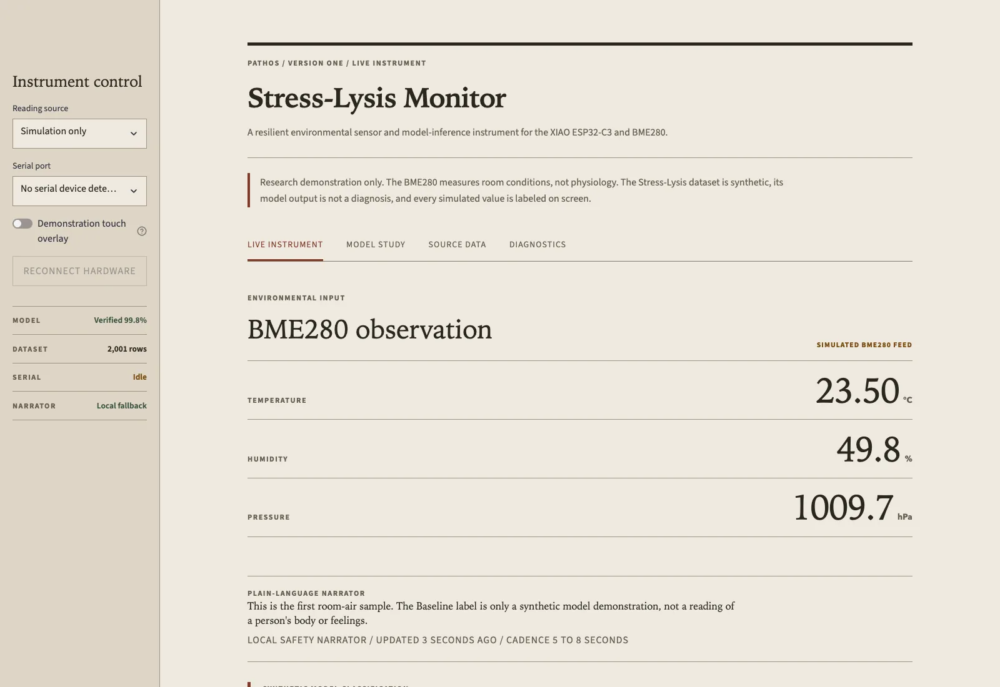
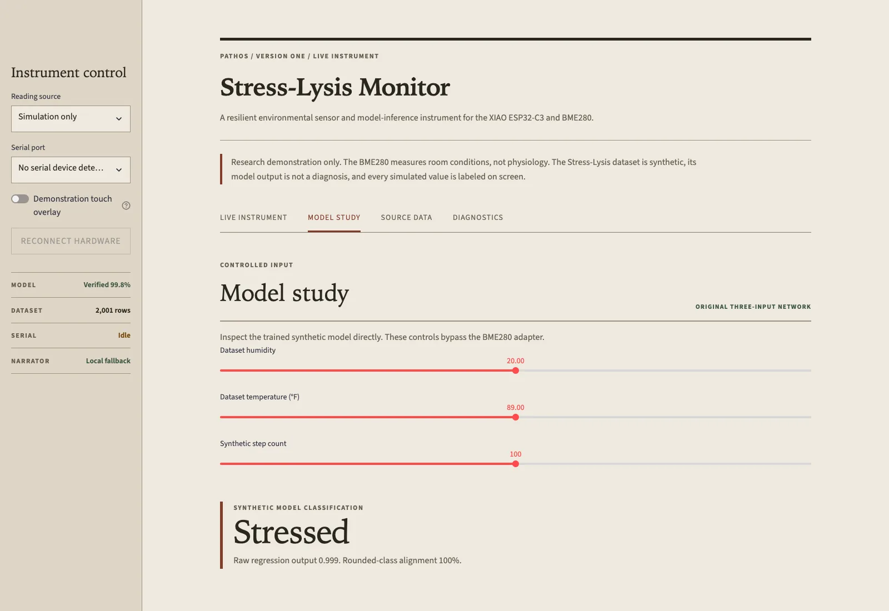
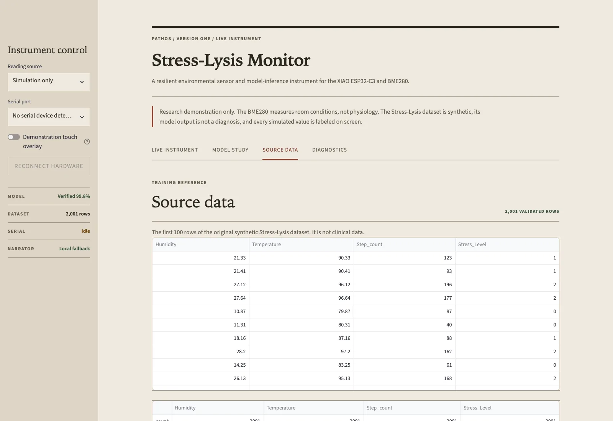
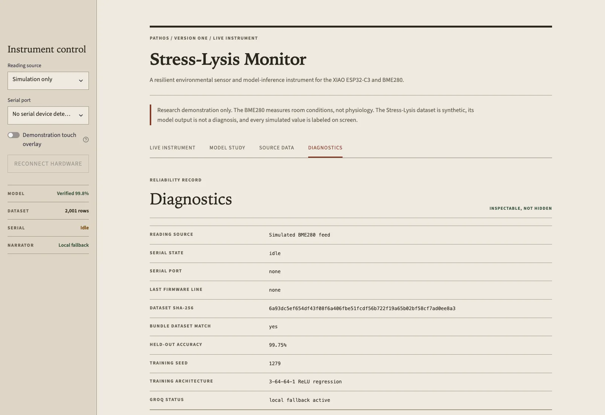
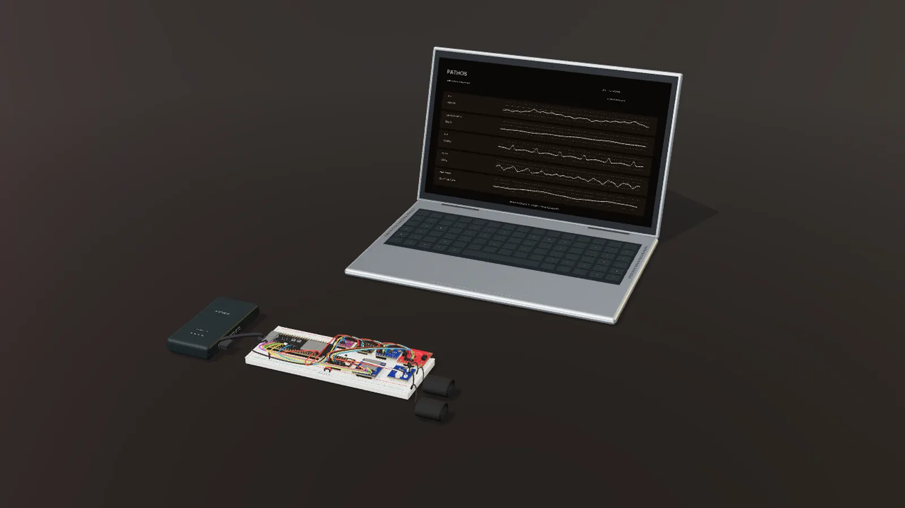

01
They can’t always tell you
Without words, stress has to be guessed from behaviour, and behaviour is the last thing to change.
Research prototype · MVP 2 in development
PATHOS reads the body’s early signals with under $25 in parts instead of a $200 wearable, and its model runs on the device. Built with families from Autism Involves Me.
Featured by 5NEWSDemonstrated at AIM Fest
2,000+
people reached through Autism Involves Me
AIM community network
13.6K
likes on the @autism_feed post, with 4,389 shares
@autism_feed on Instagram
Top 10
national finalist
SkillsUSA NLSC 2026
1st
place at the state and regional science fair
Arkansas State & Regional Science Fair
A short film that moves as you scroll. Stress builds in the body before people can say it, and staff often notice only at the point of overload. PATHOS works in steps: sense skin conductance and temperature, stream synchronized signal windows live to the model, and show the result on a live dashboard. The film shows 93.72% accuracy on the WESAD research dataset when each person is held out in turn, not yet measured on PATHOS hardware, and the SkillsUSA top 10 national finalist result. It closes with two ways in, the next target and an invitation to collaborate with PATHOS IoT.
The software
Real screenshots of PATHOS version one, not mockups. Keep scrolling to step through its four screens.




Partners
The organizations and people who have shaped PATHOS, and how each one is involved.
Community partner
Founder Paula George has backed the project since the first build. Through AIM’s network, PATHOS has reached more than 2,000 people.
Medical mentors
Mary Buschlen and Josiah Leong advise on wearable design, research methods and ethics.
Media coverage
Regional segment: “Bentonville teens create AI tool to aid nonverbal autistic individuals.”
Social media coverage
250K+ followers. The post about PATHOS got 13.6K likes and 4,389 shares.
Community pitch
A joint community pitch linking the project to local advocacy groups.
Competition
PATHOS was a top 10 national finalist at SkillsUSA NLSC 2026.
Project log
From a thermometer and a question to body sensors, step by step.
An ESP32-C3, a thermometer and a question: can you see stress building from the body's own signals?
Under $25 in parts. Shown to families through AIM, covered by 5NEWS, and shared by @autism_feed.
Room sensors alone can't measure stress. We started working with mentors at the Alice L. Walton School of Medicine and moved to WESAD.
Integrating EDA, pulse and skin temperature, and planning a proper validation study.
The problem
For many nonverbal and neurodivergent people, stress doesn’t arrive with words. It shows up in the body early, and in behaviour last, when it’s already hard to turn around.
Illustration: the body’s stress signals start rising well before visible behaviour changes; the gap between them is the window that gets missed.
01
Without words, stress has to be guessed from behaviour, and behaviour is the last thing to change.
02
By the time it’s visible, calming down takes longer and the whole room feels it.
03
Wearables that measure this live in labs and price lists. Most of the families we work with go without.
A better way
An inexpensive sensing rig that reads the body’s early stress signals, makes a careful call on the device, and shows it on a dashboard anyone can read. Eight things make it different.
Fewer false alarms: one odd reading never raises a flag on its own.
See how → 02One shared bus and standard sensors, so a family can actually afford one.
See how → 03The model works with no internet connection, right on the device.
See how → 04You always know what’s real today and what’s still being built.
See how → 05Take the rig apart on screen and follow one signal from skin to dashboard.
See how → 06Shaped at Autism Involves Me events, with the people it’s for.
See how → 07A case to wear all day, with alerts for caregivers.
See how → 08Workshops for students, caregivers and teachers. Build your own sensor.
See how →01 · Why five signals
No single number tells you someone is stressed. PATHOS only flags a change when the signals agree.
Stress, or coffee, or you just took the stairs.
Stress, or a warm room, or exercise.
Blood vessels tightening under stress, or the air conditioning.
Agitation, or walking to class.
Tap the signals you'd see together. See how PATHOS reads the combination.
When skin conductance climbs, heart rhythm shifts and skin temperature drops while you’re sitting still, that’s a much stronger sign.
02 · Sensors
All five share one I2C bus (SDA GPIO 8, SCL GPIO 9). Only the environmental sensor is in the current build.
GSR → ADS1115Sweat glands react quickly under stress, sometimes before you notice it yourself.
MVP 2MAX30102Not just how fast the heart beats, but how much the gap between beats varies.
MVP 2TMP117Blood vessels in the hands tighten under stress, so the skin cools slightly.
MVP 2MPU6050Tells walking from sitting, so movement isn’t mistaken for stress.
MVP 2BME280Room temperature, humidity and pressure, so a hot room doesn’t look like a sweaty palm.
Working03 · The model
Aligned to WESAD, a public research dataset recorded during a controlled lab stress test. Not yet validated on PATHOS hardware with real users.
The ESP32-S3 reads each sensor and timestamps every sample.
Short windows become features: levels, slopes and variability.
A scikit-learn voting ensemble runs locally, no internet needed.
Baseline, elevated or high, shown with the model’s confidence.
04 · Hardware
05 · Hardware in 3D
The PATHOS rig, modelled and animated in Blender. Scroll to take it apart, follow each signal from the skin to the dashboard, and watch the v1 software on the laptop.

Loading the 3D model…
PATHOS / 01
PHYSIOLOGICAL AWARENESS, ENGINEERED.
PATHOS / 02
ONE BREADBOARD. EIGHT CONNECTED MODULES.
PATHOS / 03
ESP32-S3 / ACQUISITION, CONTROL AND WI-FI
PATHOS / 04
TMP117 / ADS1115 / MPU6050 / MAX30102 / BME280
PATHOS / 05
ELECTRODES > GSR > ADS1115 A0 > I2C > ESP32-S3
PATHOS / 06
ESP32-S3 > DEDICATED SPI > microSD
PATHOS / 07
ESP32-S3 > WI-FI > LAPTOP
The laptop shows the PATHOS v1 software: Live Instrument, Model Study, Source Data and Diagnostics.
PATHOS / 09
SENSORS > ESP32-S3 > WI-FI > PROCESSING > V4 > DASHBOARD
Stress You Can’t See,
Awareness You Can.
06 · The build
An ESP32-S3 and a BME280 streaming into a Streamlit dashboard. It only measures the room, but it proved the pipeline end to end. Keep scrolling to deal through the photos; drag sideways to swipe, tap one to open it.
07 · In the works
A custom board with the body sensors built in. No photos yet: we’ll post real ones when it exists, not renders.
MAX30102 for pulse and HRV, a GSR front end for skin conductance, and a temperature sensor that touches the skin.
A case printed in 3D, small enough to wear all day, not just hold during a demo.
Caregivers get alerts over the network while the model keeps running on the device.
Roadmap
Is a wellness tool, informed by research, processed locally, upfront about its limits.
Isn’t a medical device, a substitute for care, or finished.
08 · Workshops
For students, caregivers and teachers.
What the body actually does under stress, and how to read it.
Wire a sensor, write Arduino code, and learn why 3.3 V vs 5 V logic matters.
How a classifier works, what confidence means, when not to trust one.
Breadboard, ESP32, thermometer. Real wiring, real data.
What readings mean, responding calmly, wellness vs diagnosis.
How it works
No setup, no account, no app to install. This is the flow we run at AIM events.
Body sensors are being built into MVP 2. Today’s build runs the same pipeline with the room sensor.
Founder
Founder & CEO, PATHOS
Builds PATHOS end to end: the ML pipeline and WESAD work, component choice and I2C wiring, and the medical and ethics framing. Student at Bentonville High School.
Medical mentors: Mary Buschlen and Josiah Leong, Alice L. Walton School of Medicine. Community partner: Paula George, Autism Involves Me.
FAQ
No. It’s a wellness awareness project. It doesn’t diagnose anything and it isn’t a substitute for care.
MVP 1 reads the room (temperature, humidity and pressure) and runs the whole pipeline end to end: sensing, the model on the device, and the dashboard. MVP 2 adds the body sensors: skin conductance, pulse and skin temperature.
The model is aligned to WESAD, a public dataset recorded during a controlled lab stress test. It hasn’t been validated on PATHOS hardware with real users yet; a proper validation study is next. We threw out an early model that scored R² = 0.9977 because it was trained on data we generated ourselves.
The model runs on the device, with no internet needed. In MVP 2, caregivers get alerts over the network while the model keeps running on the device.
Wearables that measure these signals usually cost $200 or more. Most of the families we built PATHOS with can’t spend that, so the parts budget is a hard limit.
Nonverbal and neurodivergent people, and the caregivers, educators and therapists around them. It’s built with families from Autism Involves Me.
Yes. Write to us to try a demo, bring PATHOS to your community or help build it. We also run workshops for students, caregivers and teachers.
Get in touch
Caregivers, researchers, teachers and builders: try a demo, bring PATHOS to your community, or ask us anything. One email is all it takes.
rsignsv1279@gmail.com